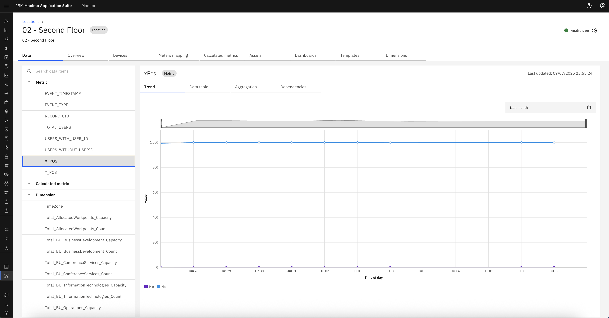

Cisco Spaces Location Metrics
Once the Cisco Spaces integration is set up and events are being processed successfully, IBM MAS Monitor begins to display real-time and historical location-based metrics fetched directly from Cisco Spaces.
These metrics provide deep insights into user presence, movement, and positioning within a mapped floor or space.
Accessing Location Metrics
You can view metrics associated with a Cisco Spaces location using either of the following methods:
-
Navigate via Floor Name Link
- Go to the Cisco Spaces Locations table.
- Click on the Floor Name (which is a clickable link) for the subscribed location.

-
Search from Locations Tab
- Go to the Monitor → Locations tab.
- Search for the location by its mapped Floor Name.
- Select the matching location from the results to open the detailed location view.

Once inside the location page, view the Metrics section to see Cisco Spaces data.
Metrics Fetched from Cisco Spaces
Below is the list of key metrics received from Cisco Spaces.
1. EVENT_TIMESTAMP
Represents the timestamp when the event is received.
2. EVENT_TYPE
Represents the type of event that occurred (e.g., entry, exit).
3. RECORD_UID
Unique identifier for the event record received from Cisco Spaces.

4. TOTAL_USERS
Indicates the total number of users detected in the location at that timestamp.
5. USERS_WITH_USER_ID
Number of users identified with a valid user ID.


6. USER_WITHOUT_USERID
Number of anonymous users or users without an ID.

7. X_POS
X-coordinate of user position within the mapped space.


8. Y_POS
Y-coordinate of user position within the mapped space.
Dimensions Fetched from Cisco Spaces
In addition to event metrics, Cisco Spaces also provides dimension details configured during the subscription phase. These include:
1. X-OFFSET
The horizontal offset configured in Edit Offset and Measurement.
2. Y-OFFSET
The vertical offset configured in Edit Offset and Measurement.